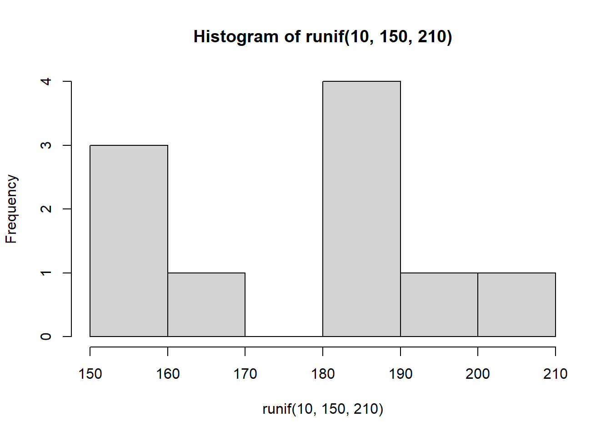
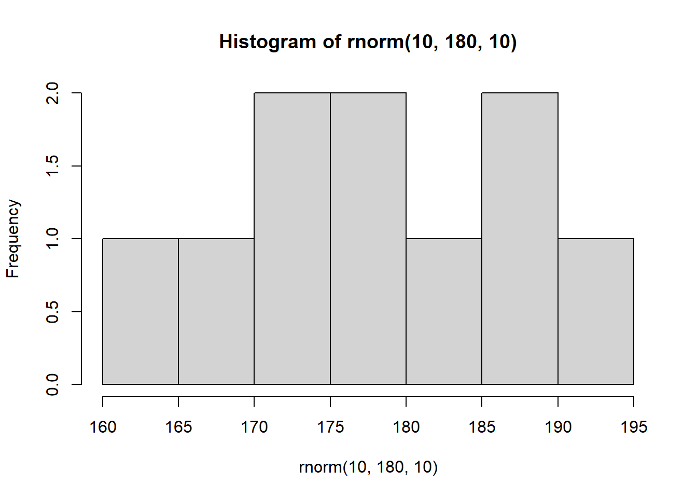
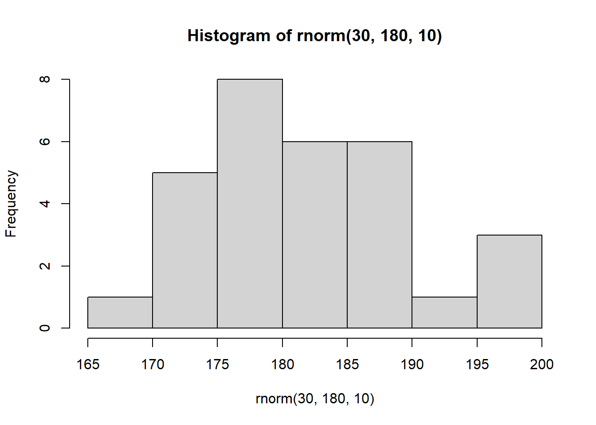
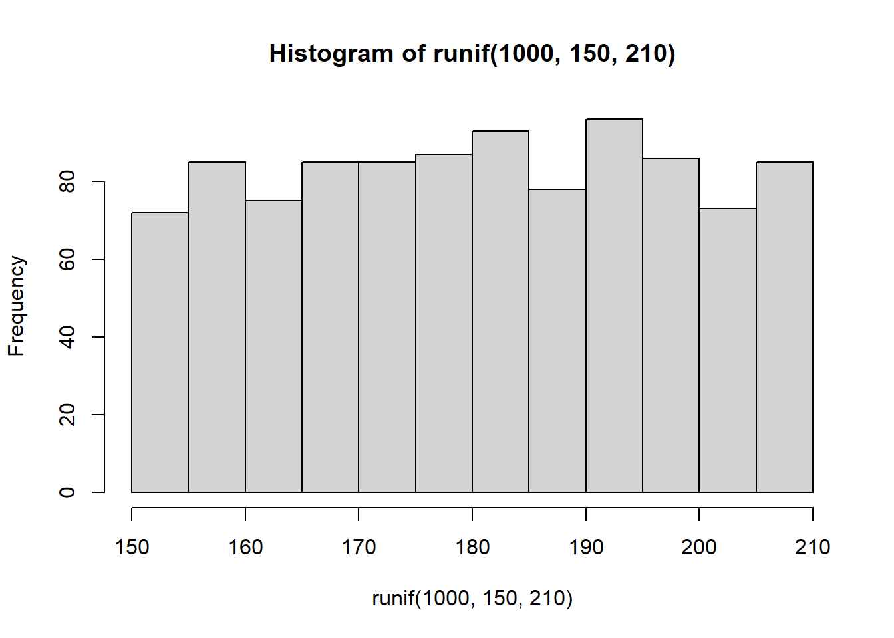
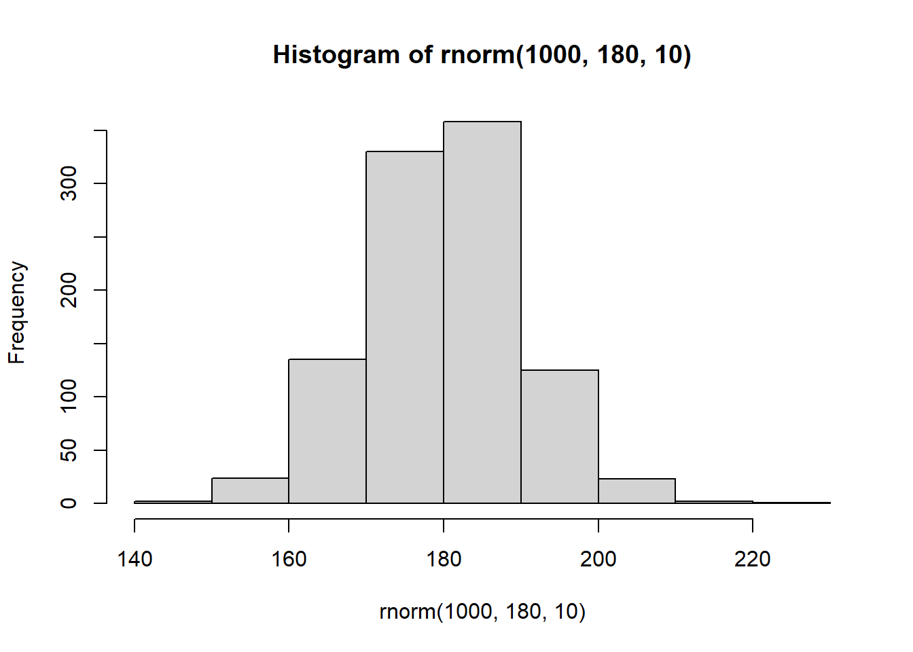
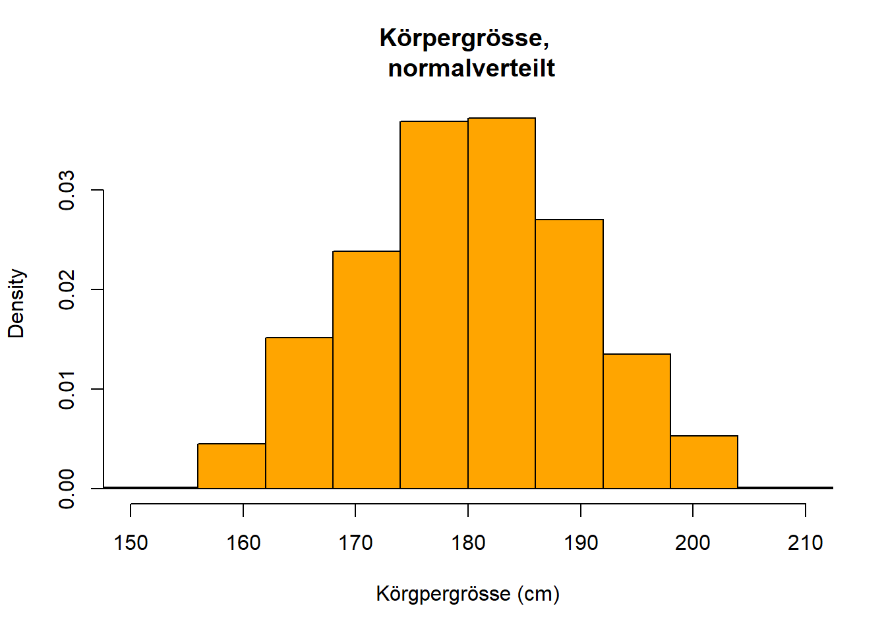
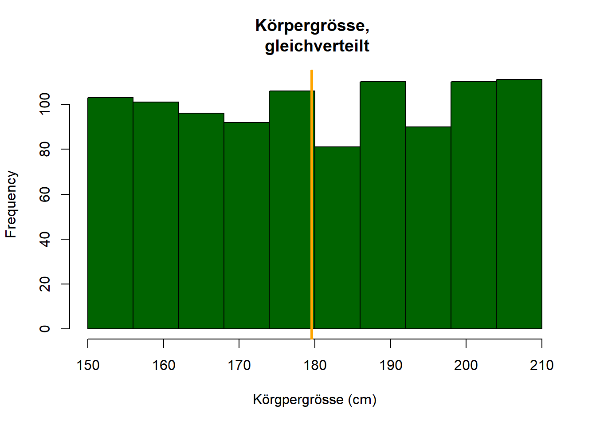
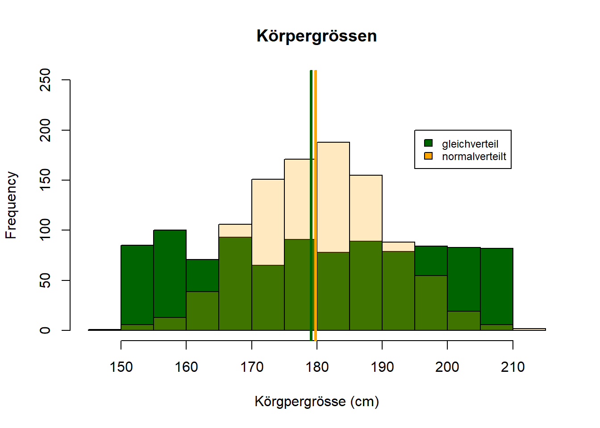

4 Wochenplan 04
…Vorbereitung von der 04. auf die 05.Einheit.
4.1 Lernziele
Nachdem wir uns bereits verschiedenste Grundlagen für die Arbeit mit R Studio erarbeitet und erste statistische Inhalte kennengelernt haben stehen nun einige ergänzende Aspekte an. Mittels diesen Aspekten wollen wir uns immer näher an die tatsächliche Arbeit der sozialwissenschaftlichen Datenanalyse bewegen: grafische Techniken sollen ausprobiert, Zufallsvariablen kennengelernt und weitere Datensätze erstellt werden. Der vierte Wochenplan soll uns so nicht zuletzt vorbereiten, das Prinzip der Inferenzstatistik mittels R zu verstehen.
Konkret lassen sich folgende Seminarziele festhalten:
- Sie können zwei Variablen in einem Streudiagramm darstellen und die Darstellungen interpretieren.
- Sie kennen den Unterschied von Gleichverteilungen und Normalverteilungen und können in R entsprechend verteilte Zufallsvariablen erstellen.
- Sie können metrische Verteilungen in Histogrammen darstellen.
- Sie haben erste Techniken kennenglernt, wie Grafiken erweitert und kombiniert werden können.
- Sie verstehen, was ein Dataframe in R ist und können die Unterschiede zu einer Matrix benennen.
- Sie haben sich in R die Grundlagen für ein Verständnis von Inferenzstatistik allgemein und des Stichprobenfehlers im Besonderen erarbeitet.
4.2 Aufgaben
- Nutzten Sie
plot()um die Verteilung eines Variablen-Paars darszustellen, das Sie im Rahmen des letzten Wochenplans und der Aufgabe zu den Korrelationen erstellt haben. Verwenden Sie weiter auch eine Farbe für den Plot und verweisen Sie im Titel sowie in den Achsenbeschriftungen auf das sozialwissenschaftliche Phänomen, das Sie darstellen.
Als Beispiel dient hier ein Variablenpaar von Delia Bazzigher, das eine schwach-positive Korrelation aufweist:
age <- c(11, 16, rep(seq(12, 25, 3), 7), 17, 27, rep(seq(12, 70, 3), 3), 22)
screenhours <- c(rep(c(20, 25, 24, seq(23, 70, 3), 19, 20), 4), rep(40:47, 2))
cor(age, screenhours)## [1] 0.2039158Zuerst ein simpler Plot…
plot(age, screenhours)…dann wir dann über diverse Elemente erweitern können:
help(plot)- Implizit haben wir immer schon einen Typ bestimmt, nämlich
type= "p" - …davon können wir die Punktform und Grösse bestimmten:
pch =&lwd = - Titel (auch mit Zeilenumbruch):
main = - Achsenbeschriftung:
xlab =&ylab = - Grössen des Textes:
cex.lab = - Farbe (sowohl über eine schriftliche Bezeichnung als auch über Zahlen):
col = - (…)
plot(age, screenhours,
type = "p",
pch = 15,
lwd = 2,
main = "Zusammenhang zwischen Alter und \nZeit, die vor einem Bildschirm verbracht wurde",
xlab = "Alter (j)",
ylab = "Bildschirmzeit (h)",
cex.lab = 1.2,
col = c(1:100)
)
- Erstellen Sie Vektoren für eine Gleichverteilung mittels
runif()und für eine Normalverteilung mittelsrnorm(). Diese Vektoren sollen als Variablen Körpergrössen repräsentieren. Erstellen Sie die jeweils zwei Vektoren in unterschiedlichen Längen, und zwar…
m Folgenden werden die in der Aufgabe verlangten Verteilungen als Histogramme dargestellt. Insbesondere bei grösseren Fallzahlen werden so die Eigenschaften der Verteilungen deutlicher:
Bei der Gleichverteilung hat jede Ausprägung dieselbe Auftrittswahrscheinlichkeit. Das heisst, dass jede Körpergrösse zwischen Minimal- und Maximalwert (die beiden Parameter der Funktion runif()) mit derselben Häufigkeit vorkommt. Dies entspricht aber nicht der empirischen Realität von Körpergrössen.
Bei der Normalverteilung gruppieren sich die meisten Werte um den Mittelwert von 170cm, während kleine und grosse Werte mit zunehmender Abweichung immer weniger häufig auftreten. Dies wiederum entspricht stärker der tatsächlichen, empirischen Verteilungen von Körpergrössen. Unterschieden werden die Normalverteilungen (auch in der Funktion rnorm()) über die beiden expliziten Parameter des arithmetischen Mittels und der Standardabweichung (Diaz-Bone 2019, 140f).
…mit je 10 Fällen:
summary(runif(10,150,210))## Min. 1st Qu. Median Mean 3rd Qu. Max.
## 157.2 167.6 182.2 179.8 189.6 203.2summary(rnorm(10,180,10))## Min. 1st Qu. Median Mean 3rd Qu. Max.
## 163.0 168.1 176.7 174.1 180.3 182.9hist(runif(10,150,210))
hist(rnorm(10,180,10))
…mit je 30 Fällen:
summary(runif(30,150,210))## Min. 1st Qu. Median Mean 3rd Qu. Max.
## 151.6 169.0 184.8 182.2 199.1 209.5summary(rnorm(30,180,10))## Min. 1st Qu. Median Mean 3rd Qu. Max.
## 160.9 177.0 181.2 181.3 186.8 201.0hist(runif(30,150,210))
hist(rnorm(30,180,10))
…und mit je 1000 Fällen:
summary(runif(1000,150,210))## Min. 1st Qu. Median Mean 3rd Qu. Max.
## 150.0 165.4 180.4 180.6 196.1 210.0summary(rnorm(1000,180,10))## Min. 1st Qu. Median Mean 3rd Qu. Max.
## 150.0 173.0 179.2 179.4 185.7 208.5hist(runif(1000,150,210))
hist(rnorm(1000,180,10))
Als Ergänzung: runif() und rnorm() werden noch von der Funktion ‘rbinom()’ ergänzt, die zufällige binomiale Verteilungen erstellt. Dies sind Verteilungen die angeben, ob ein Ereignis bei einer bestimmten Wahrscheinlichkeit eingetreten ist oder nicht. Damit kann zum Beispiel aufgezeigt werden, wie oft Sie bei zehn Münzwürfen Kopf bekommen (Beispiel 1), oder auch wie oft Sie bei 100 Mal würfeln mit zwei Würfeln zwei Sechsen erzielen (Beispiel 2).
rbinom(10, size = 1, prob = 0.5) #Beispiel 1## [1] 1 1 0 1 0 0 0 0 1 1rbinom(100, 2, (1/6 * 1/6)) #Beispiel 2## [1] 0 0 0 0 0 0 0 0 0 0 0 0 0 0 0 0 0 0 0 0 0 0 0 0 0 0 0 0 1 0 0 0 0 0 0 0 0
## [38] 0 0 0 0 0 0 0 0 0 0 0 0 0 0 0 0 0 0 0 0 0 0 0 0 0 0 0 0 0 1 0 0 0 0 0 0 0
## [75] 0 1 0 0 0 0 0 0 0 0 0 0 0 0 0 1 0 0 0 0 0 0 0 0 1 0
- Als nächstes sollen Sie die beiden Verteilungen aus der Aufgabe 2, die 1.000 Fälle aufweisen, grafisch darstellen.
Wie können die 10 Klassen erreicht werden? Die Variante breaks = 10 scheint nicht immer zu funktionieren, sondern ist lediglich ein zu erreichender “Vorschlag” (vgl. die Hinweise in der Hilfe zu hist() unter dem Punkt breaks). Wir können aber die Punkte, wo die Klassenumbrüche erfolgen sollen, selber bestimmen. Insbesondere bei Gleichverteilungen mit deren klaren Grenzen funktionerit dies einfach über eine Sequenz. Bei der Normalverteilung müssten wir die Punkte, wo die Breaks erfolgen, teilweise noch “händisch” bestimmen.
hist(runif(1000,150,210),
main = "Körpergrösse, \n gleichverteilt",
xlab = "Körgpergrösse (cm)",
col = "darkgreen",
xlim = c(150,210),
breaks = seq(from=150,
to=210,
by= ((210-150)/10)))
hist(rnorm(1000,180,10),
main = "Körpergrösse, \n normalverteilt",
xlab = "Körgpergrösse (cm)",
col = "orange",
xlim = c(150,210),
breaks = c(100, 156, 162, 168, 174, 180, 186, 192, 198, 204, 300))
Über die Funktion abline() kann dem aktuellen Plot eine Linie hinzugefügt werden. Fügen Sie jeweils einem Histogramm den Mittelwert der anderen Verteilung als vertikale Linie hinzu (ebenfalls in der entsprechenden Farbe).
hist(runif(1000,150,210),
main = "Körpergrösse, \n gleichverteilt",
xlab = "Körgpergrösse (cm)",
col = "darkgreen",
xlim = c(150,210),
breaks = seq(from=150,
to=210,
by= ((210-150)/10)))
abline(v = mean(rnorm(1000,180,10)), col = "orange", lwd = 3)
hist(rnorm(1000,180,10),
main = "Körpergrösse, \n normalverteilt",
xlab = "Körgpergrösse (cm)",
col = "orange",
xlim = c(150,210),
breaks = c(100, 156, 162, 168, 174, 180, 186, 192, 198, 204, 300))
abline(v = mean(runif(1000,150,210)), col = "darkgreen", lwd = 3)
Hinweis: Es konnte zu Problemen beim ‘knitten’ führen, wenn die abline() in einem anderen Codechunk aufgerufen wurde.
Das Argument add = TRUE lässt Sie eine neue Grafik über die aktuelle Grafik legen. Versuchen Sie, auf diese Art Ihre beiden Histogramme in einer Grafik darzustellen. Hierzu können noch drei weitere Anpassungen vorgenommen werden:
- Die Dimensionen der Y-Achse können angepasst werden über
ylim =. - Die Farben der Histogramme können transparent gemacht werden in dem wir auf RGB Werte zurückgreifen (ein Vorschlag von Felix Sigrist).
- Wir können der Grafik noch eine Legende hinzufügen (ein Vorschlag von Josias Bruderer).
hist(runif(1000,150,210),
main = "Körpergrössen",
xlab = "Körgpergrösse (cm)",
col = "darkgreen",
xlim = c(145,215),
ylim = c(0, 250))
#Funktion um die RGB-Daten der Farbe "Orange" zu erhalten:
col2rgb("orange")## [,1]
## red 255
## green 165
## blue 0hist(rnorm(1000,180,10),
col = rgb(255, 165, 0, 255/4, maxColorValue = 255),
add = T)
abline(v = mean(rnorm(1000,180,10)), col = "orange", lwd = 3)
abline(v = mean(runif(1000,150,210)), col = "darkgreen", lwd = 3)
legend(195, 200,
legend = c("gleichverteil", "normalverteilt"),
fill = c("darkgreen","orange"),
cex = 0.75 )
- Erzeugen Sie ein Dataframe, das aus fünf Variablen besteht und 100 Fälle umfasst. Nutzen Sie dazu die verschiedenen Funktionen, die wir bisher kennengelernt haben (Zufallsvariablen,
rep(),seq(), …). Probieren Sie ebenfalls, dass die fünfte Variablen dem Character Datenformat entspricht. Überlegen Sie sich einen sozialwissenschaftlichen Kontext für dieses Dataframe und benennen Sie die Variablen dementsprechend. Mit diesem Datensatz werden wir im nächsten Wochenplan weiterarbeiten.
Für diese Aufgabe gab es viele tolle Beispiele. Hier zwei Varianten, einmal von Vanessa Leutner und einmal von Josias Bruderer:
#Beispiel von Vanessa Leutner
Einkommen <- c(seq(from = 2000, to = 12000, length.out = 100))
Krankheitstage <- rnorm(100, mean = 6.5, sd = 3)
Ausbildungsjahre <- rep(c(3,6,9,3,13,4,6,7,10,5), each = 10)
Anzahl_Kinder <- rep(c(1,0,1,2,3,2,3,5,6,7,1,2,3,4,5,3,2,1,4,5), each = 5)
Geschlecht <- rep(c("weiblich", "männlich", "weiblich", "mänlich", "divers"), each = 20)
df_vl <- data.frame(Einkommen, Krankheitstage, Ausbildungsjahre, Anzahl_Kinder, Geschlecht)
#Beispiel von Josias Bruderer
df_jb <- data.frame(alter = round(runif(100, 18, 64)),
geschlecht = sample(rep(c(seq(1,3),2,3), 20)),
tvdauer = sample(round(rnorm(100, 3, 1), 0)),
happiness = sample(c(sample(1:10, 80, replace = T), rep(NA, 20))),
prog = sample(rep(c("Kinder","Unterhaltung","Unterhaltung","News","Sport"), 20)))Die Funktion round()wurde von vielen anderen auch genutzt. Eine andere Variante zum Runden hat noch Fabio Keller vorgeschlagen, nämlich mittels as.integer():
alter = as.integer(runif(100, 18, 64))
alter## [1] 29 44 35 54 53 61 52 28 63 51 42 52 47 35 31 44 39 18 18 40 42 21 57 57 61
## [26] 20 43 44 35 18 35 23 55 50 24 37 24 28 21 23 49 24 57 33 36 62 59 40 19 51
## [51] 50 34 49 44 26 23 21 58 59 60 49 44 58 47 24 59 26 35 60 25 34 60 27 30 27
## [76] 18 56 27 38 48 22 21 47 24 24 34 42 50 56 55 36 49 56 50 43 51 62 31 53 51Zur Wiederholung: Was ist nochmals ein Objekt des Typs data.frames (Manderscheid 2017, 39)?
Während (…) Vektoren weitgehend dem entsprechen, was in der sozialwissenschaftlichen Statistik und in anderen Auswertungsprogrammen als Variable bezeichnet wird, enthält das Objekt Dataframe mehrere Variablen: Die Zeilen eines Dataframes enthalten die Beobachtungen als Fälle, die Spalten die Faktoren und Vektoren als Variablen. Damit entspricht ein Dataframe einem zweidimensionalen, tabellarisch darstellbaren Datensatz. Die Faktoren und Vektoren in den Spalten müssen dabei die selbe Länge, d. h. die selbe Anzahl von Elementen haben, können dabei aber sowohl Zahlen als auch Buchstaben enthalten.
- Bonusaufgabe: Das Paket “ggplot2” (als Teil der grösseren Paketsammlung “tidyverse”) ermöglicht gegenüber der Basisversion von R besonders komplexe grafische Lösungen. Versuchen Sie Ihre Variablenverteilung aus Aufgabe 1 auch mit diesem Paket darzustellen. Sie können den Beispielcode unten nutzen (die von Ihnen zu ergänzende Aspekte sind mittels den beiden Zeichen >< im Code versehen) und gleichzeitig etwas recherchieren, wie “ggplot2” funktioniert.
p1 <- ggplot(data = data.frame(cbind(>Variable1<, >Variable2<)),
mapping = aes(x = >Variable1<,
y = >Variable2<))
p1 + geom_point(size = >Zahl<, color = ">Farbe<") + ggtitle(">Ihr Titel<")Das Paket “ggplot2” hat eine sehr eigene Logik davon, wie Grafiken erstellt werden. Im Seminar selber werden wir in diese Logik nicht vertieft einsteigen. Ein gute Einführung in das Paket und dessen Möglichkeiten bietet das Buch Data Visualization (Healy 2019).